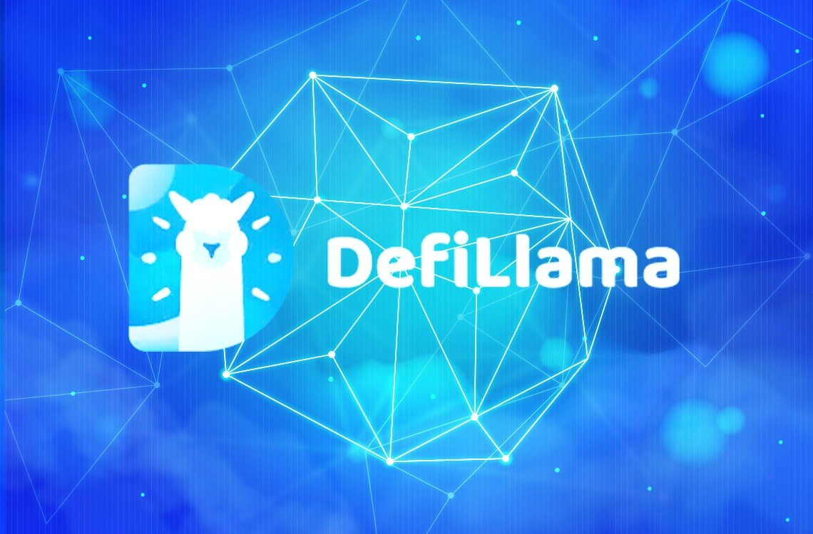

DefiLlama: Ditching the Spreadsheet, Embracing the Llama? A Wall Street Refugee's Musings
Okay, so picture this: it’s 3 AM, I’m fueled by lukewarm coffee and existential dread, staring at a spreadsheet that looks like it was designed by a vengeful spreadsheet god. Columns of DeFi protocols, rows of TVL figures, all updated manually – because, you know, that's how we roll in the "institutional-grade" DeFi space… or at least, how we used to roll. My eyes felt like they were bleeding into the monitor.
That’s when I discovered Swap DefiLlama .
Now, I'm not going to lie, my initial reaction was skeptical. A llama? Really? I’d spent years navigating the cutthroat world of Wall Street, surrounded by hushed tones, mahogany desks, and Bloomberg terminals the size of small cars. A website with a cartoon llama felt… jarring. Like showing up to a board meeting in a tie-dye shirt.
But the sheer convenience? The elegance of having all that data in one place, updated in real-time? It was revolutionary. It was like going from using a rotary phone to having a goddamn iPhone – except instead of cat videos, you get real-time DeFi TVL.
And I'm not the only one feeling the Llama love. I've seen even the most hardened quant traders, the guys who wouldn't touch anything that wasn't coded in Fortran, quietly browsing DefiLlama. It's become this unspoken secret weapon, a tool that levels the playing field (somewhat).
The sheer accessibility is what I find truly remarkable. Yes, there's still a lot of nuance – the whole thing is far from foolproof, and understanding the limitations of on-chain data is crucial. You still need the analytical skills and market knowledge to interpret it all. DefiLlama doesn't magically turn you into a DeFi guru, but it makes the process of becoming one significantly less painful.
Think of it as this: DefiLlama is the Bloomberg terminal of the DeFi world, but… friendlier. More approachable. Less likely to induce migraines. (Okay, maybe I'm exaggerating slightly, but the point stands).
But here’s where things get tricky. I’ve had conversations with colleagues who are still resistant. Some are locked into their established workflows, clinging to their spreadsheets like life rafts in a sea of blockchain data. Others remain unconvinced about the reliability of on-chain data, arguing that it's incomplete and prone to manipulation. And, frankly, they're not entirely wrong.
So, is DefiLlama a perfect replacement for the complex data aggregators traditionally used by institutional players? Probably not. At least, not yet. The depth of analysis offered by dedicated institutional platforms might still be superior. But DefiLlama provides a rapid-fire overview, a much-needed first glance, and a far simpler way to get a grasp on the vast DeFi landscape. And in the high-speed, ever-evolving world of decentralized finance, that quick, accessible overview can be priceless.
Writing this article has been a journey of sorts. It started with a grumpy, coffee-fueled rant about spreadsheets, and now I’m finding myself somewhat surprisingly enthusiastic about a website featuring a cartoon llama. It's a testament to how quickly the DeFi world is changing, and how easily even the most jaded Wall Street veteran can be won over by a convenient, accessible tool. Sometimes, the best innovations are the simplest ones, the ones that just make life easier. And sometimes, that simplicity comes with a cute llama. Who knew?
Why Swap DefiLlama Matters (Even If You Think "DeFi" Sounds Like a Sci-Fi Villain)
Okay, let's be honest. The first time I heard "DeFiLlama," I pictured a fluffy llama wearing a tiny tuxedo, maybe offering alpaca-based financial advice. (Don't judge, my brain works in mysterious ways.) Turns out, it's way cooler – and way more consequential – than that. It's a website that aggregates data across decentralized finance protocols, and, surprisingly, it's become a crucial tool for institutions cautiously dipping their toes into this wild, wild west of finance.
Why? Well, because trust, my friends, is a rare and precious commodity in the DeFi world. It's like the Wild West, but instead of six-shooters, everyone's wielding smart contracts and complex algorithms. You've got these protocols popping up left and right, each promising astronomical returns and revolutionary technology. Some are legit, some are… less so. Navigating this landscape without a map is basically financial suicide. That's where DefiLlama comes in.
Think of it as a comprehensive credit report for the DeFi universe. It provides a snapshot of total value locked (TVL) – essentially, how much money is currently sitting in a specific protocol. A high TVL suggests (and I stress suggests) a degree of stability and user confidence. But it's far from the whole story. That’s the thing about DeFi – nothing is ever simple. Just because a protocol has a massive TVL doesn't automatically mean it's secure or even sustainable. It could be a rug pull waiting to happen, a cleverly disguised Ponzi scheme, or just a genuinely innovative project that’s about to crash and burn for reasons no one fully understands. (Remember Luna? Yeah, me neither.)
So why bother using DefiLlama? Because it's the first layer of due diligence. It's not a foolproof system – far from it – but it's a starting point. For institutions, with their risk aversion and regulatory hurdles, this starting point is invaluable. They can't just throw money at every shiny new DeFi project; they need data, and DefiLlama, while not perfect, offers a centralized, relatively accessible source. It helps them identify potentially promising projects, understand market trends, and, crucially, flag red flags.
Now, I know what you're thinking: "Isn't all this data publicly available anyway?" Yes, in theory. But aggregating it from numerous, often disparate, sources requires significant resources and technical expertise. DefiLlama does the heavy lifting, presenting the information in a digestible, user-friendly format. It's the difference between wading through a swamp of raw data and having a clear, albeit somewhat muddy, map.
To be clear, DefiLlama isn't a magic bullet. It doesn't predict the future. It's not a financial advisor (please, for the love of all that is holy, don't take it as one). But it provides context. It offers a glimpse into the often opaque world of DeFi, offering institutions a much-needed degree of transparency in an environment where transparency is frequently a luxury, not a given.
This whole journey writing this article has been interesting. I started with a silly llama image and ended with a sobering reflection on the importance of due diligence in the high-stakes world of decentralized finance. I guess that's the beauty (and the beast) of DeFi – it’s constantly evolving, constantly surprising, and constantly reminding us that the future of finance is anything but predictable. But tools like DefiLlama are making that unpredictable future a little less terrifying, a little more navigable, even for the most cautious of institutions. And maybe, just maybe, that llama in a tuxedo will find its place in this new financial landscape after all.
DefiLlama APIs: My Accidental Odyssey into Enterprise Integration (and why I almost cried)
Okay, confession time. I’m not a coder. I'm more of a "copy-paste-and-pray" kind of person. So, when my boss, bless his slightly-out-of-touch heart, tasked me with integrating DefiLlama's APIs into our enterprise system, I felt like I'd been asked to build a spaceship out of toothpicks and hope. My initial reaction? A low-level existential dread, punctuated by the faint whimper of my sanity slowly escaping.
Seriously, the sheer volume of data DefiLlama provides – TVL across chains, token prices, protocol analytics…it's like staring into the face of a thousand spreadsheets, each one screaming at you in a different, incomprehensible language of JSON. I spent my first few days drowning in a sea of documentation, feeling like I was learning a new hieroglyphic language. The irony? I’d been happily using DefiLlama for months to track my own (admittedly meager) DeFi investments, completely oblivious to the beast lurking beneath the user-friendly interface.
The learning curve was…steep. Picture this: me, hunched over my laptop at 3 AM, fuelled by cold coffee and sheer desperation, battling syntax errors like a gladiator against a hydra. Every solved problem led to three more seemingly insurmountable challenges. At one point, I seriously considered writing a strongly-worded email to the DefiLlama developers titled: "Help! I'm Trapped in a JSON Prison!" (I didn't, thankfully. Professionalism, you know?)
But slowly, painstakingly, I started to get a grip. I found that despite the initial chaos, the DefiLlama API documentation, while not exactly a walk in the park, was actually pretty comprehensive. Okay, it wasn't written in layman's terms – it spoke fluent "developer," a language I was still learning. But with some patience (and a lot of online tutorials), I managed to piece together working code.
What I found most striking wasn't just the power of the APIs themselves, but the sheer potential. Imagine: real-time risk assessments based on TVL fluctuations, automated portfolio tracking, even predictive analytics for DeFi investments. The possibilities felt endless. The initial despair began to morph into something akin to…awe? Okay, maybe not awe, but a grudging respect. I was actually building something useful, and relatively cool.
This entire journey made me realize something: enterprise integration, particularly with DeFi data, isn’t just about technical skills; it's about resilience, problem-solving, and the ability to navigate the inevitable moments of "what-the-hell-am-I-doing?". It’s messy, frustrating, and often hilarious, but ultimately, it's incredibly rewarding.
So, here I am, several late nights and a few grey hairs later, with a successfully integrated DefiLlama API. Did I conquer the digital beast single-handedly? Maybe not. Did I emerge unscathed? Definitely not. But I learned a ton, I built something I'm proud of, and I now have a profound appreciation for the intricate world of DeFi data and the people who tirelessly work to make it accessible. And that, my friends, is a pretty great feeling. Now, if you'll excuse me, I need a long vacation. And maybe a therapist.
Lost in DeFi Translation: How Swap DefiLlama is Bridging the Institutional Gap (and My Sanity)
Remember that time I tried to order a pizza in Italy using only Google Translate? Absolute disaster. Turns out, even with a seemingly perfect translation, cultural nuances and subtle phrasing can completely derail the process. Turns out, cross-chain liquidity in DeFi feels a bit like that – a delicious pizza tantalizingly out of reach unless you navigate a truly bewildering linguistic landscape.
For institutional investors, the complexities are amplified tenfold. They’re not playing with pocket change; they’re dealing with millions, even billions, requiring robust, reliable, and above all, safe cross-chain transfer solutions. This isn’t just about moving ETH from Ethereum to Arbitrum; it's about minimizing slippage, navigating gas fees that could rival a small country’s GDP, and ensuring regulatory compliance in a field that’s still figuring itself out. And that’s where platforms like Swap DefiLlama start to look… interesting.
Now, I'll be honest. My initial reaction to Swap DefiLlama was… skeptical. Another DeFi aggregator? Really? The space is already overflowing with them, each promising the moon and often delivering... well, less than stellar experiences. But something about its focus on institutional needs piqued my curiosity. Their emphasis on providing a streamlined interface for larger transactions, managing risk effectively, and offering better price discovery compared to individual DEXes seemed genuinely different. It felt less like a shiny new toy and more like a well-engineered tool.
But here’s where my internal debate begins. Is this truly a game-changer for institutional DeFi adoption, or is it just another layer of complexity on an already overly complicated system? The devil, as they say, is in the details. While the aggregated liquidity sounds fantastic on paper – effectively combining various DEXs to find the best rates – I still have questions. How does Swap DefiLlama handle potential vulnerabilities across different chains? What kind of security audits have they undergone? These are the things that keep institutional investors up at night. They're not looking for promises; they’re looking for verifiable proof.
The transparency of DefiLlama itself – with its vast data aggregation capabilities – offers a degree of comfort. The ability to see aggregated liquidity across chains in real-time is invaluable for strategic decision-making. But it’s not a magic bullet. Even with access to this data, you still need a robust risk management strategy. You still need to understand the intricacies of smart contracts and the potential for exploits.
Ultimately, I think Swap DefiLlama represents a step in the right direction. It’s an attempt to bridge the chasm between the decentralized, often chaotic world of DeFi and the structured, risk-averse environment of institutional finance. Is it perfect? Absolutely not. Does it solve all the problems? Definitely not. But does it offer a more accessible and potentially safer pathway for institutional investors to participate in the burgeoning cross-chain liquidity ecosystem? I’d cautiously say, yes.
This journey wasn't just about evaluating a platform; it was about confronting my own biases and wrestling with the complexities of a rapidly evolving technology. My initial skepticism gave way to cautious optimism, which I suppose, is a pretty decent outcome for a writer trying to navigate the wilds of DeFi. The pizza in Italy still remains elusive, but at least I'm feeling slightly less lost in this digital translation.
Decoding DeFiLlama's Swap Reporting: My Accidental Odyssey into Compliance
Okay, confession time. I'm not a crypto accountant. I’m more of a “accidentally stumbled into this rabbit hole while trying to track my meme-coin gains” kind of person. So when I started digging into DeFiLlama’s swap reporting and compliance, I felt like that bewildered tourist in a foreign city, armed with only a phrasebook and a questionable sense of direction. Think Indiana Jones meets someone who really, really needs a nap.
My initial foray into the world of DeFiLlama’s data felt… overwhelming. It’s like trying to understand the tax code but with even more acronyms and a higher likelihood of encountering a rug pull. I mean, come on, "TVL" (Total Value Locked)? Seriously? It sounds like something out of a spy novel, not a financial platform. But underneath the jargon, there's a crucial need for transparency and, let's face it, compliance.
The sheer volume of data is staggering. DeFiLlama tracks a massive number of decentralized exchanges (DEXs), each with its own quirks, nuances, and… let's just say creative accounting practices (sometimes). How do you even begin to ensure the accuracy and reliability of this information? It's a monumental task, akin to cataloging every grain of sand on a beach – except the grains of sand are constantly shifting and some of them might be disappearing into thin air (looking at you, rogue rug pulls).
One of the things that struck me was the inherent tension between the decentralized nature of DeFi and the need for regulated reporting. DeFi's promise is freedom – freedom from traditional financial intermediaries and their often-opaque practices. But that freedom comes with the responsibility of ensuring transparency. Is it a paradox? Maybe. It certainly feels like trying to square a circle sometimes.
I also found myself pondering the responsibility of projects listed on DeFiLlama. Are they obligated to provide accurate data? And if so, how can we enforce that obligation in a decentralized environment? It's a bit of a Wild West out there, which is exciting and terrifying in equal measure. It feels a bit like relying on the honor system on a massive scale, which, let's be honest, is a risky bet.
Honestly, my journey into DeFiLlama’s reporting hasn't yielded any simple answers. What I've learned is less about specific compliance procedures and more about the complexities of navigating a rapidly evolving ecosystem. I still don't fully grasp the intricacies of every reporting metric, but I have a newfound appreciation for the sheer scale of the challenge. And maybe, just maybe, I understand a tiny bit more about why “TVL” is important.
So, this wasn’t a neat, concise explanation of DeFiLlama’s swap reporting compliance. It was more of a meandering stroll through a jungle of acronyms, uncertainty, and a whole lot of caffeine. But that’s okay. Because the beauty of DeFi, in its wild, unpredictable chaos, is that it’s a journey, not a destination. And my journey – the accidental, caffeine-fueled odyssey into DeFiLlama's data – has only just begun.
DefiLlama and My $50,000 Headache: Why You Need Better Tools Than a Spreadsheet (and Maybe a Therapist)
So, picture this: It's 3 AM. I'm staring bleary-eyed at a spreadsheet, a chaotic tapestry of numbers representing my DeFi portfolio – a portfolio that, let's just say, used to be significantly less anxiety-inducing. My carefully curated collection of tokens, once a source of quiet pride, now felt like a digital Jenga tower teetering on the brink of collapse. Why? Because tracking it all with DefiLlama, while initially helpful, had become a nightmare for a portfolio of this size.
I know, I know. DefiLlama is amazing. Free, comprehensive, widely used – it’s the DeFi equivalent of that trusty, well-worn pair of jeans you can't bear to throw away. But like those jeans, eventually, they start to wear thin. For smaller portfolios, it’s fantastic. For anything beyond a few hundred bucks spread across a handful of protocols, though? It's... less so.
The problem isn't DefiLlama itself – it’s my expectations. I initially thought, "Sweet! One-stop shop for all my DeFi tracking needs!" It is a one-stop shop, just not a very comfortable one when you're dealing with a portfolio that’s significantly more complex than a couple of ETH and a handful of stablecoins. Trying to reconcile its data with my actual transactions became a Sisyphean task, constantly battling slight discrepancies. And the interface? Let's just say it's not exactly designed for the kind of granular analysis necessary when you're managing a serious chunk of your net worth in this volatile space. (Seriously, have you tried filtering across multiple chains at once? It feels like trying to herd cats during a hurricane.)
I started questioning everything. Was I overthinking things? Was I missing some crucial setting? Was my impending caffeine withdrawal affecting my judgment? Probably a bit of all three. But the core issue remained: DefiLlama's strengths are inversely proportional to the size and complexity of your portfolio.
So, what's the alternative? Well, there isn't one single perfect solution. This is where it gets messy, because the right tool depends heavily on your specific needs. For instance, some dedicated portfolio trackers offer impressive features like automated tax reporting – a lifesaver for anyone navigating the murky waters of crypto taxation (something I'm learning the hard way). Others excel at advanced charting and analytics, allowing for much deeper dives into portfolio performance. But these typically come with a price tag. And then there's the learning curve – sometimes steeper than scaling Mount Everest in flip-flops.
The journey, then, has become one of exploration. I'm slowly transitioning away from solely relying on DefiLlama, experimenting with different tools, and accepting that there's likely no single "holy grail" solution. I’m learning to balance the convenience of a free, all-in-one platform with the power and precision offered by more specialized (and often pricier) tools. It’s a process – one that, admittedly, involves significantly less 3 AM spreadsheet staring.
This article isn't meant to be a definitive guide – more a shared experience, a confession even. I started with a simple question: "Can DefiLlama handle my growing DeFi portfolio?" The answer, it turns out, is a nuanced "it depends," a testament to how quickly the DeFi landscape evolves and the ever-growing sophistication of individual investor needs. And that, my friends, is a lesson worth more than any perfect set of analytics.
My Accidental Plunge into Swap DefiLlama Wild West (and how Swap's MEV protection saved my bacon)
Okay, so picture this: it’s 3 AM. I’m fueled by lukewarm coffee and the sheer stubbornness to finally understand MEV. Maximal Extractable Value, for the uninitiated, is basically DeFi’s version of a pickpocket – sneaky bots grabbing extra profits at your expense. I’m trying to swap some obscure token on a DEX (Decentralized Exchange), feeling pretty smug about finally navigating the gas fees jungle. Then, bam, the transaction fails. My gut reaction? "Are you kidding me? Is this the equivalent of getting mugged in a digital alleyway?"
Turns out, my carefully planned swap was snatched by a faster, more ruthless bot. It was a classic MEV attack. Brutal. The whole experience left me feeling slightly violated, like I’d just been out-maneuvered by a particularly sophisticated badger.
This got me thinking. What’s the point of all this decentralization if we’re still vulnerable to these high-tech bandits? Enter DeFiLlama's Swap feature, and its attempts at MEV protection. Now, I'm no blockchain guru, far from it. I’m more of a curious bystander trying to understand this wild, wild west of decentralized finance. But even I can appreciate the importance of MEV protection, especially after my 3 AM near-disaster.
DeFiLlama's Swap, as far as I understand, aims to minimize these MEV attacks by aggregating liquidity from various DEXs. It’s like having a team of super-efficient shoppers comparing prices across different stores to get you the best deal, all while shielding you from those opportunistic "bots" who’d happily steal your bargain. Brilliant, right? Except... it's not quite that simple.
There are still some limitations, of course. No system is perfect, and completely eliminating MEV is probably a holy grail pursuit. I mean, we're talking about code, algorithms, and a whole ecosystem of incentivized actors. It’s a complex dance, constantly evolving. Even with the protection, there's always a tiny voice whispering in my ear: "What if...?" (It's the voice of my 3 AM experience, probably.)
What I appreciate about DeFiLlama's approach is the transparency. They don't claim to have solved MEV entirely, which I find refreshing. It’s more of an ongoing effort, a continuous arms race against the ever-evolving tactics of these MEV-hungry bots. It's not a magic bullet, but it’s a step in the right direction. It’s like wearing a Kevlar vest in a digital Wild West—it won't make you invincible, but it significantly increases your chances of survival.
So, where does this leave me? Still slightly wary, yes. Still learning, definitely. But with a newfound appreciation for the efforts being made to protect everyday users like me from the less savory aspects of the DeFi world. My initial frustration turned into a fascination. It’s a complex issue, and I’m sure I’ve only scratched the surface, but the journey itself has been enlightening. It's like discovering a new layer of the internet, a hidden ecosystem filled with innovation, risk, and the occasional 3 AM near-disaster. And, hey, at least I learned about MEV the hard way. Now I'm a bit smarter, a bit more cautious, and definitely a bit more caffeinated.
The Wild West of DeFi Swaps: Wrestling with Settlement Risk on DefiLlama
Okay, picture this: you’re haggling over the price of a vintage vinyl record at a bustling flea market. You finally agree on a price, hand over the cash, and the seller… disappears. Record-less. Cash-less. That, my friends, is a simplified, slightly less chaotic version of settlement risk in decentralized finance (DeFi). And DefiLlama, while a fantastic resource, highlights just how much of a Wild West this still is.
I’ve been tracking DeFi for a while now, mostly because I’m fascinated by the technology but also slightly terrified. The potential is incredible – borderless finance, automated processes, transparency… the whole shebang. But the reality? Well, it’s a bit messier than the brochures suggest. One of the messier parts? Settlement risk.
For those unfamiliar, settlement risk in DeFi swaps boils down to this: you execute a swap, expecting to receive your agreed-upon assets. But what if the other party doesn't deliver? Or, even worse, what if the smart contract itself glitches out? Suddenly, that sleek, automated process feels a whole lot less sleek and a whole lot more like a gamble.
DefiLlama, with its comprehensive data on various DeFi protocols, offers a glimpse into this potential minefield. You can see the volume traded, the various protocols involved, and even the fluctuations in liquidity. But it doesn't tell you the whole story. It doesn't show you the anxiety of waiting for that swap to settle, or the gut-wrenching feeling if something goes wrong. It's data, cold hard numbers. It misses the human element, the very real fear of losing your hard-earned crypto.
Now, I’m not saying DeFi is inherently unsafe. Far from it. Many protocols employ sophisticated mechanisms to mitigate settlement risk, like atomic swaps or decentralized oracles. But the technology is still evolving, and frankly, some projects are better at this than others. Looking at DefiLlama, you can see a vast spectrum of protocols, some clearly more mature and robust than others. The sheer number of protocols alone is slightly overwhelming, isn't it? It's like staring into the abyss of a thousand different, slightly risky flea markets.
So, how do we navigate this? Well, due diligence is key. Thoroughly research any protocol before you engage with it. Look beyond the flashy marketing and delve into the technical details. Understand how the protocol handles settlement, what security measures it employs, and what its track record looks like. DefiLlama can help with some of this – but remember, it’s just one piece of the puzzle.
And let's be honest, a certain amount of risk is inherent in this space. It’s the price of entry for potentially huge rewards. But it's a risk that needs to be carefully assessed, not blindly accepted. This isn't like buying a cup of coffee. This involves real money, real value, and real potential for loss.
This article started with a simple analogy – a flea market deal gone wrong. But as I delved into the complexities of DeFi settlement risk, it became clear that the analogy is only a starting point. The DeFi space is far more nuanced, far more exciting (and frankly, more terrifying) than a simple record transaction. It's a journey, and one that requires careful navigation, constant learning, and perhaps, a healthy dose of caution. It’s a journey I'm still on, and I suspect many others are too. The Wild West may be slowly taming itself, but it’s still a place where you need to keep your wits about you.
DefiLlama's Institutional On-Ramp: A Rollercoaster Ride (and Why I'm Still Holding On)
Remember that time I tried to make a single batch of cookies for my niece's birthday, only to realize my recipe was scaled for a bakery? It was a sticky, floury disaster. That's kind of how I felt approaching institutional-level DeFi usage initially. The sheer volume, the complexities of regulatory compliance, the potential for… well, let's just say a lot can go wrong. But then I started digging into DefiLlama's new scalability features for institutional users, and things started to feel a bit less like a baking catastrophe and more like... a controlled experiment with potentially delicious results.
DefiLlama, for those unfamiliar, is essentially the go-to aggregator for DeFi data. It's like the Bloomberg Terminal, but for the wild west of decentralized finance. For individual users, it's great. For institutions, though? That's where things get interesting. The sheer volume of transactions, the need for robust APIs, the security concerns – it's a whole other ball game. And frankly, I was initially skeptical. Could a platform designed for the everyday user truly handle the needs of massive financial players?
My initial hesitation stemmed from a simple question: how do you build a bridge between the fast-paced, often chaotic world of DeFi and the carefully structured, meticulously documented world of institutional finance? It’s not just about throwing more processing power at the problem; it's about building trust and creating a system that is both transparent and secure.
DefiLlama's approach, at least from my explorations, seems to be focusing on a multi-pronged strategy. First, they are heavily investing in API infrastructure. This is crucial. Imagine trying to manage millions of transactions through a clunky, outdated interface. Nightmare fuel. These upgraded APIs allow institutions to seamlessly integrate DefiLlama data into their existing workflows. That's a huge step forward.
Second, they are tackling the security aspect head-on. This is where my initial skepticism was most pronounced. Dealing with institutional funds demands a level of security that's far beyond what's typically required for individuals. From what I understand, DefiLlama is collaborating with security experts to build a robust, multi-layered defense system. That’s reassuring, even if I'm still slightly paranoid about the potential for exploits. (Because let’s be honest, in DeFi, paranoia is often a virtue).
Finally, and this is a personal highlight, the user experience for institutional users seems designed to be less… overwhelming. This might sound trivial, but think about it: institutional traders are used to sophisticated platforms, not a chaotic jumble of data. DefiLlama seems to be acknowledging that and tailoring its interface accordingly. Small details matter, and thoughtful UI/UX design can be the difference between a usable platform and one that gets abandoned after a single frustrated click.
So, where do I stand after this deep dive? Honestly? My initial skepticism has been significantly tempered. DefiLlama's efforts towards scaling their platform for institutional users are impressive, even if there's still room for improvement. It’s not a perfect system, and I'm still cautiously optimistic, but the progress they've made is undeniable.
It's like that cookie recipe – I may not have baked the perfect batch the first time, but I've learned a few things, and with a few tweaks and some more practice, I might just get there. And who knows, maybe someday, DeFiLlama will help us all bake a truly perfect, scalable, and secure financial future. Until then, I'm sticking around, watching the progress with a cautiously optimistic (and slightly flour-dusted) grin.
DefiLlama's Swap Limits: My Accidental Dive into Whitelisting Wonderland (and why it felt like trying to solve a Rubik's Cube blindfolded)
Okay, so picture this: It’s 3 AM. I’m fueled by lukewarm coffee and the unshakeable belief that I’m about to pull off some DeFi wizardry. My goal? Swap a tiny fraction of my ETH for some obscure meme coin on a DEX I’d only just heard about, listed on DefiLlama. Simple, right? Wrong. Absolutely, spectacularly wrong. That's when I discovered the joys (and frustrations) of whitelisting and swap limits in DefiLlama.
I’d been tracking this token for a while – you know, the kind with a cute mascot and a suspiciously enthusiastic Telegram group. DefiLlama, my go-to resource for all things DeFi, showed it was listed on a lesser-known exchange. So, I clicked the link, all confident, ready to make my fortune… or at least, buy a decent cup of coffee.
And then I hit a wall. A metaphorical wall, made entirely of impenetrable code and frustratingly vague instructions about "whitelisting" and "swap limits." It was like suddenly being transported from a friendly DeFi beach party to a hardcore programming boot camp. Seriously, I felt like I’d stumbled onto a secret society with its own cryptic language.
What even is whitelisting? Is it some kind of exclusive club for crypto whales? (Okay, maybe that's a little dramatic, but that's how I felt at the time!). Apparently, it's a security measure – a way for the exchange to ensure that only approved users can interact with their smart contracts. Sounds sensible, right? But trying to figure out the process felt like trying to assemble flat-pack furniture with only half the instructions and a rusty screwdriver.
Then there were the swap limits. Apparently, some exchanges have limits on how much you can swap in a single transaction. Which makes sense, to prevent large-scale manipulation, I guess. But again, the communication wasn’t exactly crystal clear. One minute I was staring at a page of incomprehensible parameters; the next I was wondering if I'd accidentally signed away my firstborn. (Just kidding… mostly).
So, after several hours of frantic Googling, YouTube tutorials (that were three years out of date), and a healthy dose of caffeine-induced panic, I finally managed to navigate the maze and complete my minuscule trade. The feeling of accomplishment was oddly exhilarating, bordering on the masochistic.
Looking back, the whole experience wasn’t entirely negative. It highlighted just how much hidden complexity lurks beneath the surface of the user-friendly interfaces we often take for granted in DeFi. It’s easy to get caught up in the potential for quick gains and forget the underlying technology. This little foray into the world of whitelisting and swap limits was a necessary, if somewhat brutal, reminder of that.
So, what did I learn? Well, for one, Relying solely on DefiLlama as a guide to swapping isn't always sufficient. You need to delve deeper into the specific exchange's documentation and instructions. Secondly, always, always, ALWAYS double-check everything before confirming any transaction. (Still slightly traumatized by the experience). And thirdly, maybe 3 AM isn't the optimal time to attempt complex DeFi transactions. Maybe.
This whole journey wasn't about conquering DefiLlama. It was about embracing the learning curve, the unexpected hurdles, and the sheer stubbornness required to navigate the sometimes-confusing world of decentralized finance. It’s messy, it’s challenging, and it can be utterly infuriating. But it’s also, in its own chaotic way, thrilling. And now, thanks to this little adventure, I have a much better understanding of whitelisting and swap limits. And a slightly better appreciation for a strong cup of coffee.
DeFiLlama's Institutional On-Ramp: A Winding Road Ahead

Okay, picture this: you're trying to explain DeFi to your grandma. You start with "decentralized finance," and she gives you that look – the one that says, "Honey, you're speaking a different language." Getting institutional investors on board with DeFi feels a bit like that. It's powerful, revolutionary, even… sexy (if you’re into that sort of thing), but the language barrier, the regulatory hurdles, and the sheer complexity are significant. That's why charting a course for robust institutional services on DefiLlama is less a sprint, and more a thrilling, slightly terrifying, multi-stage rocket launch.
DefiLlama, for the uninitiated, is basically the go-to place for DeFi data. Think of it as the Bloomberg Terminal, but for the wild west of decentralized finance. And right now, that wild west is mostly populated by…well, cowboys and cowgirls. Smaller players, individual investors, the crypto-curious. But institutions? They're eyeing the landscape cautiously from the sidelines. Why? Because the current infrastructure isn't exactly built for their needs.
The truth is, institutions need more than just pretty charts and graphs. They crave robust APIs, secure data feeds, granular control, and—let's be honest—a level of customer service that goes beyond a cryptic Discord message. They need guarantees, compliance, and the comforting weight of established regulatory frameworks. Can DeFiLlama deliver that? That’s the million-dollar question (or perhaps, the multi-million dollar question, given the sums involved!).
Our roadmap is ambitious, to say the least. Phase one is about building a truly rock-solid API. This isn’t just about throwing code at the wall and seeing what sticks; it's about creating a system that’s reliable, scalable, and secure enough to handle the demands of large institutional players. Think bulletproof, not just bullet-resistant. There will be rigorous testing, probably some late nights fueled by copious amounts of coffee (and maybe the occasional celebratory beer), and a whole lot of collaborative coding.
Phase two involves tackling the regulatory elephant in the room. This is where things get… hairy. Compliance is crucial, and navigating the complex web of global regulations requires expertise that’s beyond the typical DeFi developer skillset. We're talking legal eagles, compliance officers – the whole shebang. It's going to require partnerships, careful planning, and a healthy dose of patience. I'm not going to lie, this part scares me a little. But hey, what's life without a little healthy fear?
And then there’s the question of user experience. We need a bespoke platform designed specifically for institutional needs, something that’s both powerful and intuitive. Think clean dashboards, sophisticated analytics, and a user interface that wouldn’t make a seasoned Wall Street exec flinch. Think less "Wild West," more "sleek, modern metropolis."
Honestly, this whole journey feels like building a skyscraper on quicksand. There are moments of doubt, moments of sheer exhilaration, moments where I question my sanity. But then I look at the potential – the chance to bring the power of DeFi to a whole new level of players, to unlock opportunities that were previously unimaginable – and I'm reminded why we're doing this.
So, Swap DefiLlama isn't just about creating institutional services for DefiLlama; it’s about bridging the gap between the cutting-edge innovation of decentralized finance and the established world of institutional investment. It’s about opening doors, fostering collaboration, and ultimately, ushering in a new era of financial accessibility and innovation. And that, my friends, is a journey worth taking, even if it’s a bit bumpy along the way.
tags: DeFi, Institutional Investing, Decentralized Finance, Crypto Trading, Algorithmic Trading, DefiLlama, On-chain Data, Institutional Grade, Quantitative Finance, Cryptocurrency